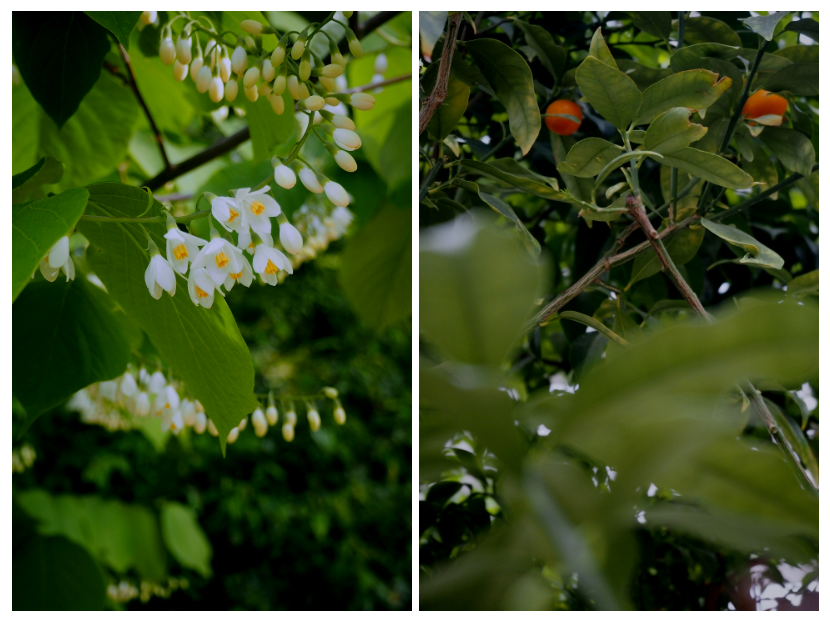

DIARY
짧게 머물다 가는 것들이 많은 계절을 지나쳐
여름은 구름에서 신기루가 보인다. 뭉게구름 위에는 언제나 커다란 궁전이 하나쯤은 있을 것 같다. 6월 11일은 여름의 뭉게구름을 본 날.
여름이 되면 삭막했던 밤이 백색소음으로 꽉찬다. 한낮 더위에 지쳤던 아이들이 열대야를 피해 밖으로 밖으로 나와서 조잘댄다.
목소리가 조막만한 아이들이 숨바꼭질도 하고 그러다가 다투는 소리도 나고 가끔은 우는소리도. 겨우겨우 10시쯤이나 되어야 겨울의 6시처럼 고요해진다.
능소화 꽃말을 아는 사람이 많을까 ? 특별하게도 '여성, 명예, 이름을 날림' 이란다. 한자는 또 능가할 능에 하늘 소, 꽃 화를 쓴다네.
하늘도 무척 아름다운데 이름을 지은이의 눈에 그만큼 능소화가 훌륭한 꽃이었나보다 하고 생각을 했다. 그리고 능소화는 있잖아 내 초성하고도 꼭 맞아.
이 말들을 쉼없이 S에게 얘기했다. 그래서 나는 능소화가 좋아 라는 결론이 나왔을 때 좋아하려고 이유를 붙였는지 이유가 붙어서 좋아했는지 더는 알 필요가 없어졌다.
여름에는 짧게 머물다 가는 것들이 많은 것 같다.
소나기가 그러하고 장미와 능소화가 그러해서 여름에 능소화가 흐드러지게 핀 담벼락을 보면 괜히 네잎클로버를 찾은 것 같다.
뚝섬유원지와 서울숲의 중간에 능소화가 쏟아지는 담벼락이 있다고 한다. 거기를 찾아가볼까. 텀블러에 커피와 조각 얼음들을 넣고 말이야.
수식어를 지우고 또 지워서 담백한 문장을 나열하는 연습을 하고 있다.
사전을 찾아봐야 알 것 같은 단어들을 이어붙이다 보면 어느 사전에서도 찾을 수 없는 해괴하고 부끄러운 글이 적혀있는 것을 발견할 수 있다.
나는 기어이 주목받고 싶어하는 것이 드러나는 내 글이 싫어서 스무살 이후로 지금까지 오래오래 무어를 잘 적지 못했다.
잘못없는 누군가에게 못된 마음을 품고 남들에게 기어코 꽁꽁 숨겨야만 하는 짓을 했던 건 너무도 생생하다.
뙤약볕 8월의 거리를 걷거나 눈이 고여 생긴 웅덩이를 참방하고 지나칠 때 아, 하고 생각나 계속 어디가 콕콕 찔러진다.
죄 짓고는 못 살아, 죄 짓고는 못 살아. 엄마는 내게 그 말을 주문처럼, 결코 잊으면 안되는 문장처럼 자주 내게 말하고는 했다.
죄나 벌이라는 게, 죄책이나 후회라는 게 이렇게 두고두고 아픈거라면 정말 그래야한다.
죄는 왜 '짓는다'고 할까. 되게 손으로 오밀조밀 땀도 좀 섞어가며 착실히 만든 느낌이 난다. 글을 쓸 때도 짓는다고 하잖아. 시를 짓는다. 가사를 짓는다. 하고.
꼭 죄를 계속 만들어내야 할 것 같이.